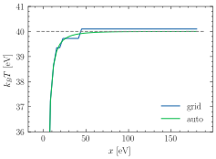

jaxrts.analysis.ITCFT_grid
- jaxrts.analysis.ITCFT_grid(S_ee_conv: ~pint.registry.Quantity, tau: ~pint.registry.Quantity, setup: ~jaxrts.setup.Setup, E_cut: ~pint.registry.Quantity) -> (<class 'pint.registry.Quantity'>, <class 'pint.registry.Quantity'>)[source]
This function is akin to
ITCFT(), but rather than an adoptive minimization, it runs on a naive \(\tau\) grid.Calculate \(F=\mathscr{L}[S]\) where S is the real dynamic structure factor (i.e., not convolved with the instrument function) See [Dornheim et al., 2022], Eqn (2).
Find the \(\tau\) for which the Laplace transform is minimal
Get the corresponding temperature
Examples using jaxrts.analysis.ITCFT_grid

Imaginary time correlation function thermometry
Imaginary time correlation function thermometry